Endlich wieder Ruhetag Posted on July 2, 2016
Tag 29
Bjuråker - Hassel 80 km
Ein Tag mit viel Sonne, Höhenmetern und Schotterstraßen. 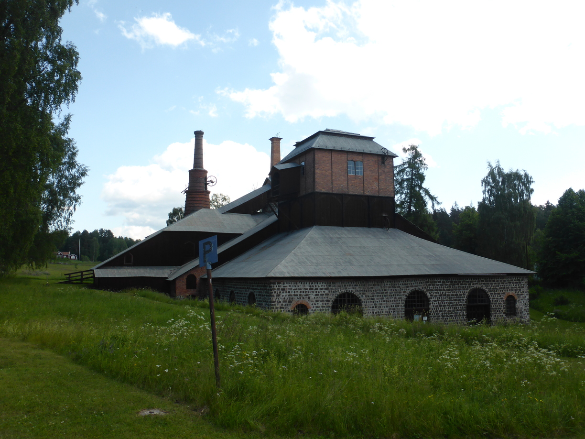 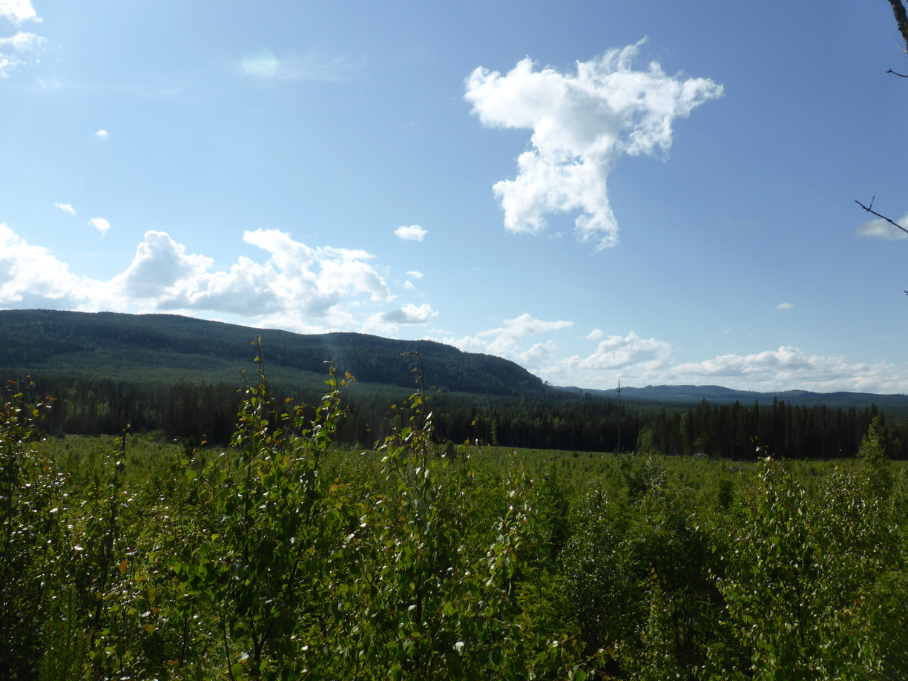
Am Ende hab ich einen super Badplats gefunden mit fließend Wasser und allem was man so braucht. 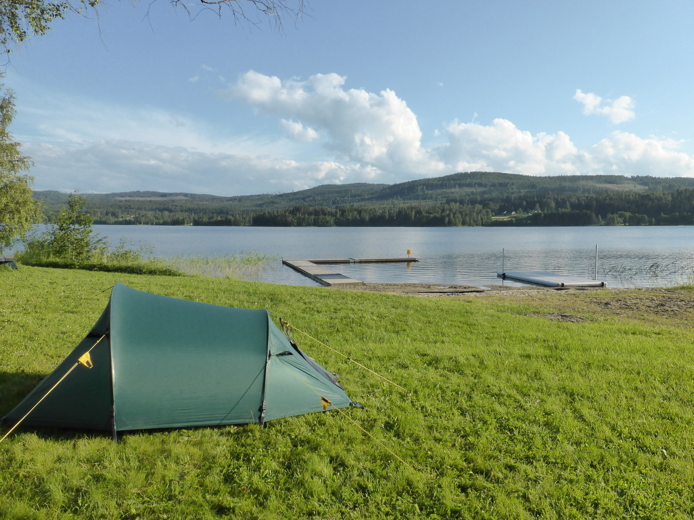
Tag 30
Hassel - Röjesjön 87 km
Zunächst ging es nach Sundsvall und dann weiter Richtung Norden. Auf einem Berg hab ich schließlich an einem kleinen See einen netten Badplats gefunden. 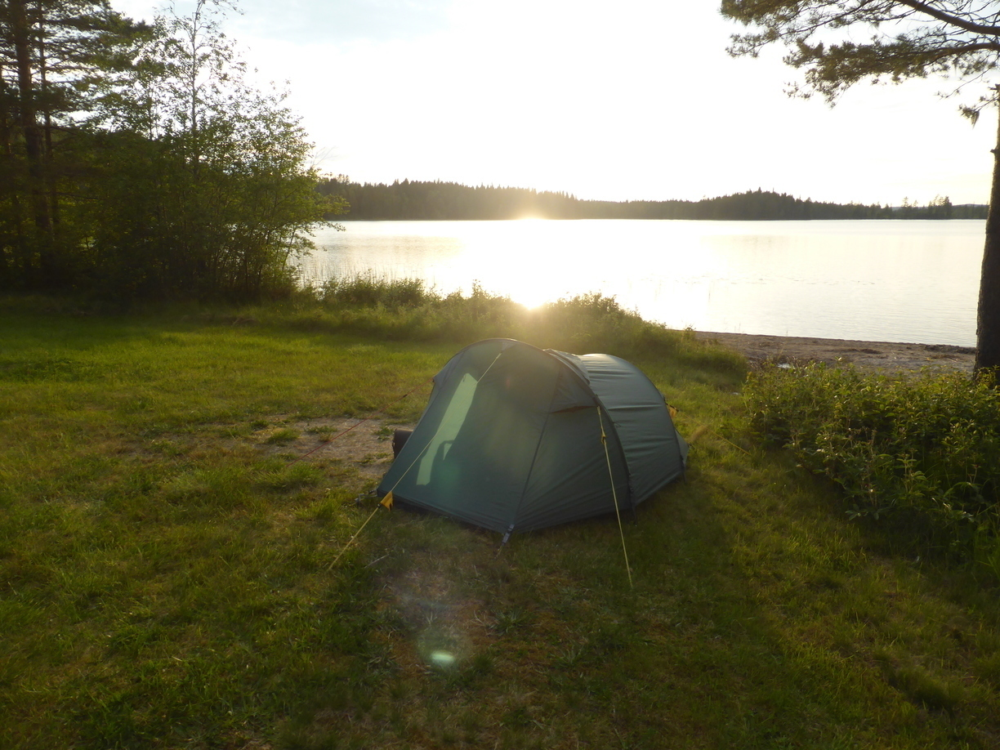
Als ich gerade mein Essen kochte kam eine Paddlerin über den See gepaddelt mit 5 Hunden im Schlepptau. 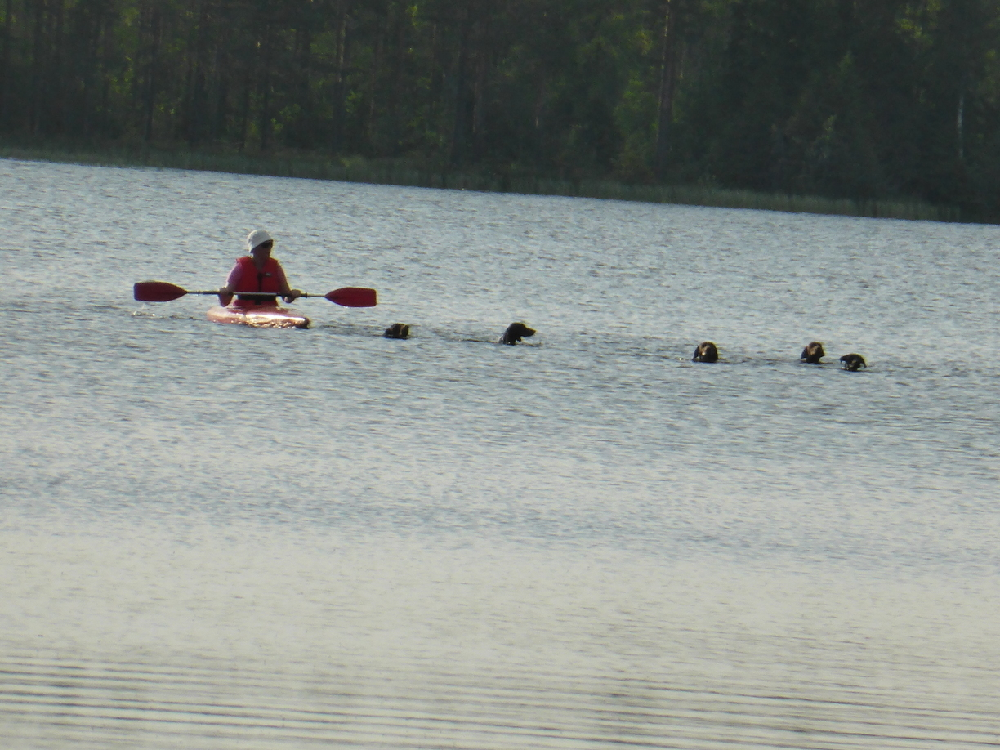
Tag 31
Röjesjön - Västertorp 75 km
Am Morgen gab es Regen. Da ich keine Eile hatte konnte ich den Regen im Zelt abwarten.
Die Route verlief zum größten Teil über eine große Straße. Unterwegs gab es eine Baustelle. In Schweden ist es oft so, dass man an der Ampel auf den Lotsen warten muss. Diesem fährt man dann hinterher, bis die Baustelle vorbei ist. Da ich da sowie so nicht mithalten kann bin ich einfach schonmal vorgefahren.
Am Nachmittag kam ich dann endlich bei Gaby und Elias in Västertorp an. Sehr gefreut habe ich mich über den herzlichen Empfang, und die Möglichkeit Wäsche zu waschen. Auch wenn Letzteres mit ein wenig Arbeit verbunden war ;). Das Wetter hatte sich auch gebessert und die Rosen vorm Haus waren voller Bienchen. 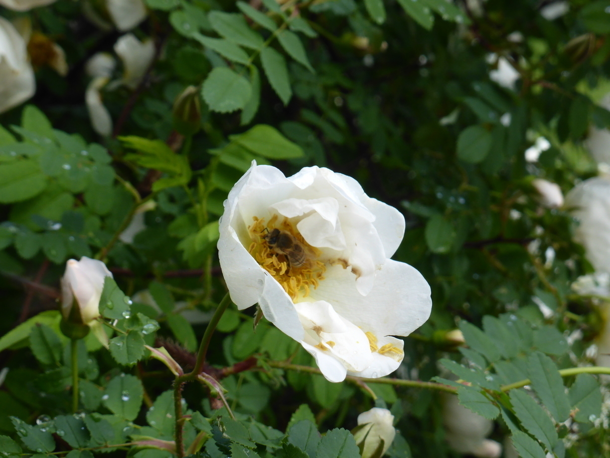
Tag 32
Ruhetag 21 km (unbeladen)
Am nächsten Tag konnte ich den ganzen Tag faul in der Hängematte liegen. Leider bekamen auch die Mücken davon Wind, so dass es dann doch nur wenige Stunden in der Hängematte waren. Schonmal von Mücken durch die Hängematte in den Rücken gestochen worden? Das ist echt kein Spaß.
Am Abend hat mir Gaby mit dem Fahrrad noch die nähere Umgebung gezeigt. 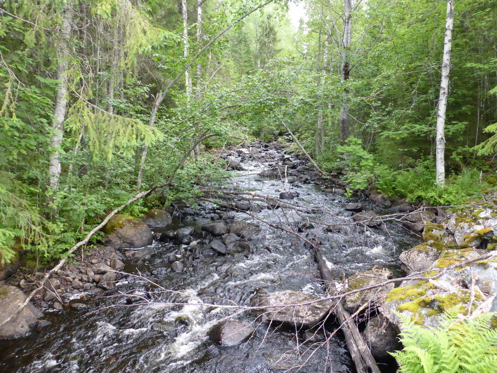 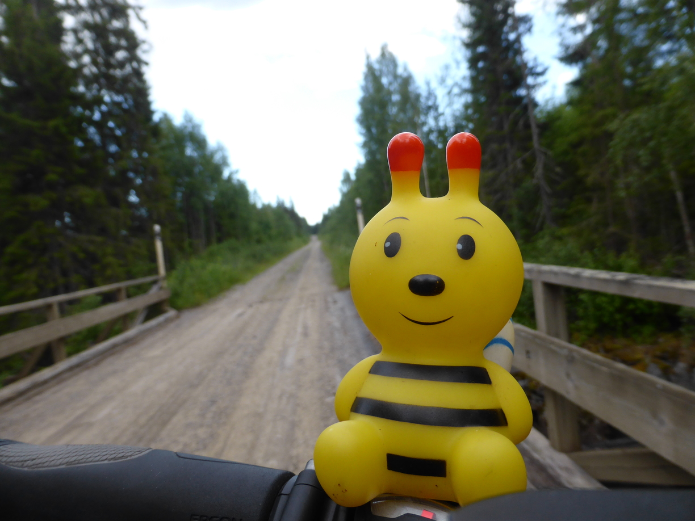 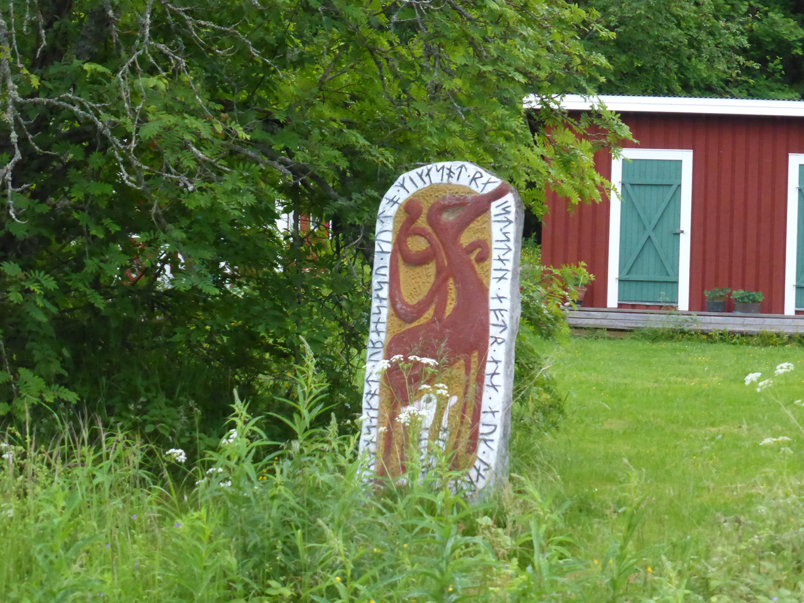 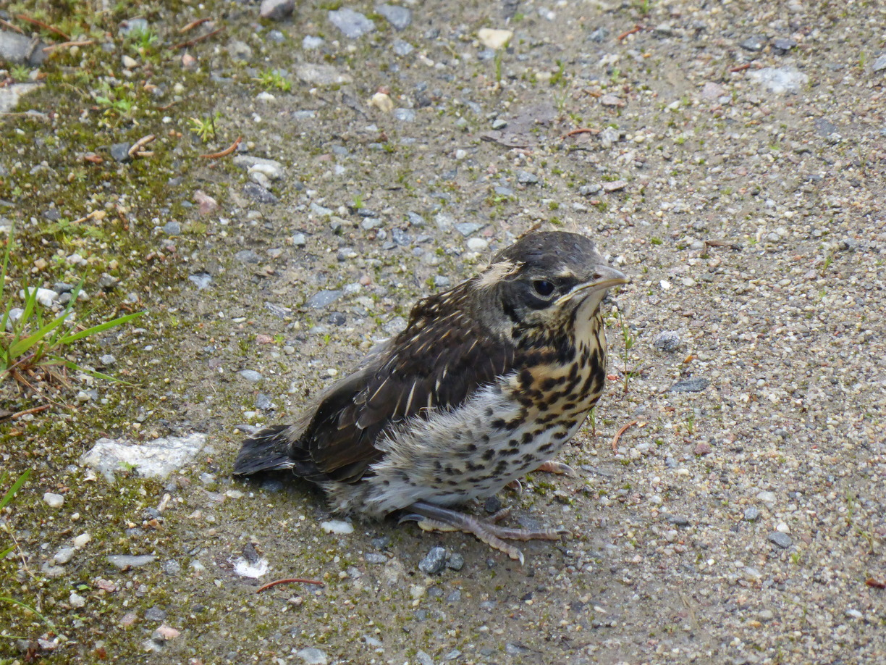 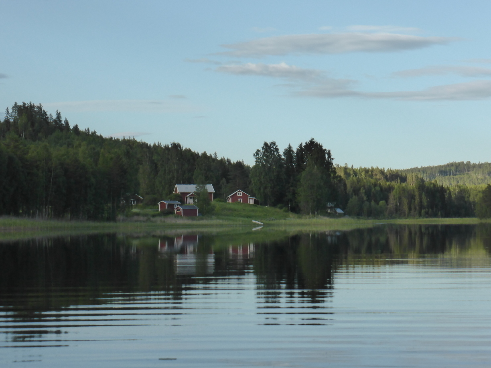 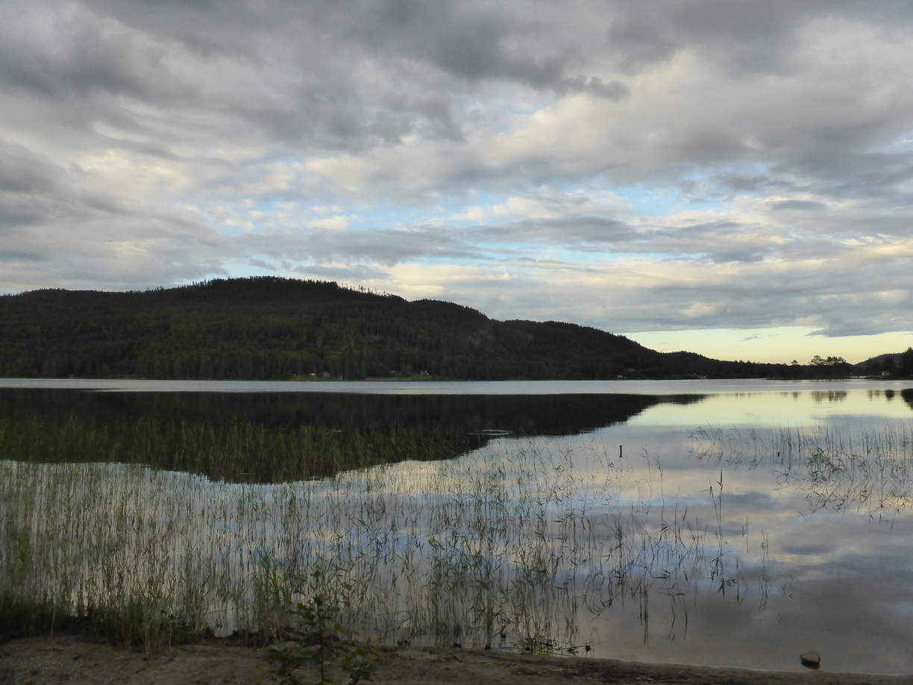